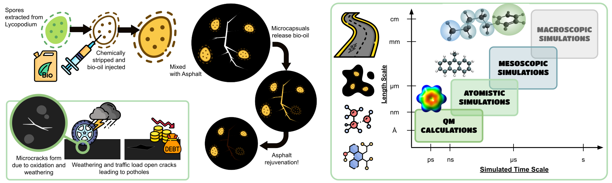

My work primarily focuses on modelling bio-oil asphalt mixtures to study the mechanisms behind asphalt's oxidation and self-healing. Here's the original paper by our group and collaborators.
I’m Rebecca, a computational chemist and PhD candidate at King's College London and I study how we can model complex organic fluids. Primarily, I look at modelling bio-oils so we can utlise them for novel applications.
I work in the Multiscale Modelling Lab lead by Dr Francisco Martin-Martinez.

My work primarily focuses on modelling bio-oil asphalt mixtures to study the mechanisms behind asphalt's oxidation and self-healing. Here's the original paper by our group and collaborators.
One project I am keen on starting is developing multiscale tools to screen bio-oils for various applications. Bio-oils are chemically complex and vary widely depending on the feedstock and conditions under which they are produced, making them difficult to study. I want to develop tools to automate their simulation and facilitate their application in more novel processes.